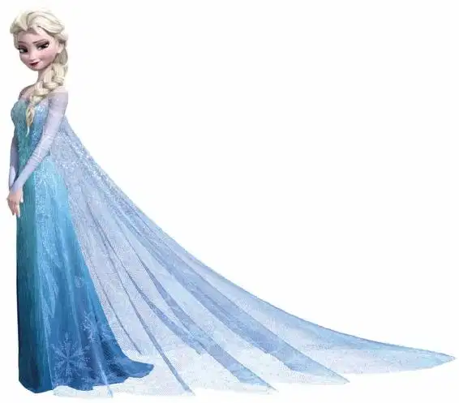

Anna is an extroverted idealist — a free spirit. She is loving, adorable and an optimistic doer who view the world through rose-acolored glasses.
安娜是一位外向的理想主义者——崇尚自由。她很有爱心，非常可爱；她同时也非常乐观，总是理想化地看待周围的世界。
Optimist, tenacious, loving, creative, adaptable, humble
乐观，顽强，有爱心，有创造力，适应力强，谦卑
Not self-aware, lacks insight, can’t sit still, daydreamer, clumsy
没有自我意识，缺乏洞察力，坐不住，爱做白日梦，笨手笨脚
